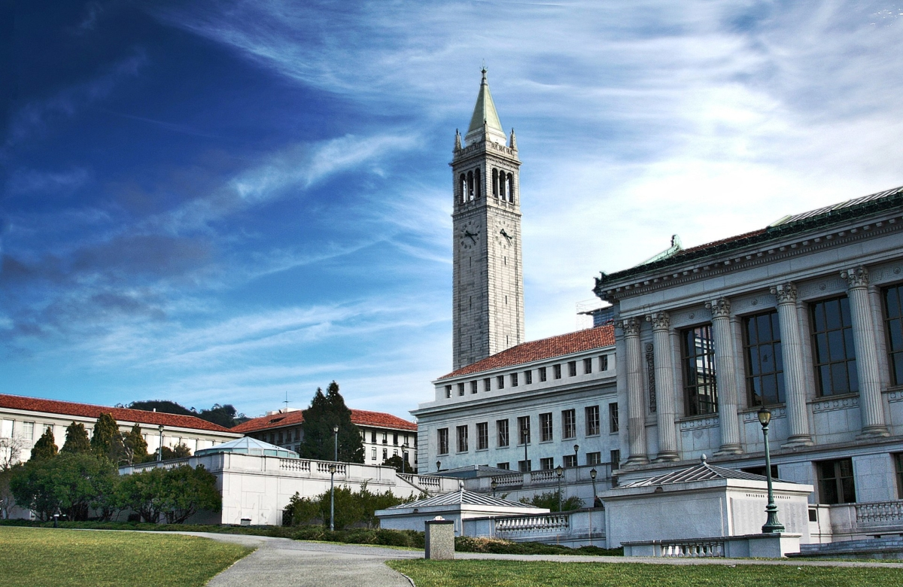
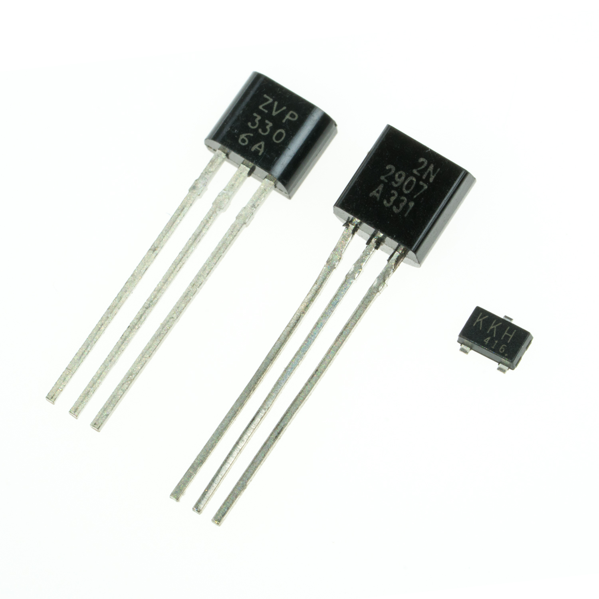
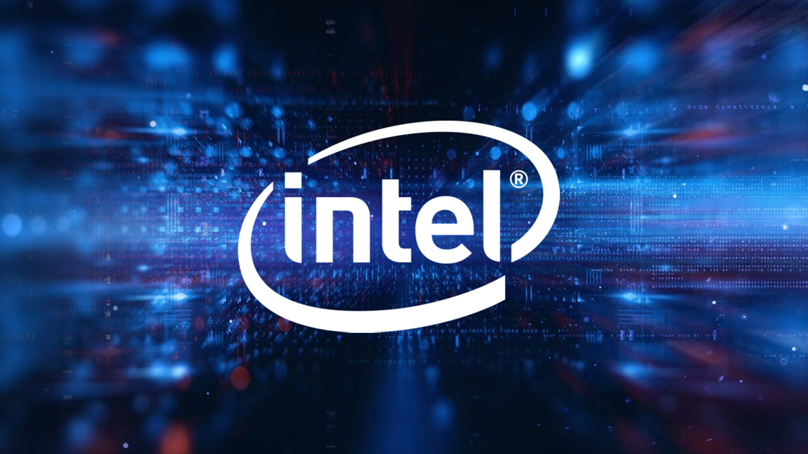
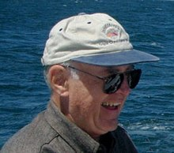

Gordon Moore

"If everything you try works, you aren't trying hard enough." -Gordon Moore

Gordon Moore was born January 3rd, 1929. Ever since his childhood, sciences and technology fascinated him. He decided to persure these two subjects, and in 1950 he was accpeted into the University of California, Berkley. It was here that he studied chemistry and physics. He graduated with a PHD in both these subjects in 1954.
After university, Gordon joined the Applied Physics Labratory at John Hopkins University in Laurel. It was here that he researched the chemistry of solid rocket propellants used by the U.S. Navy. It was after this experince that Moore decided that private industry offered more exciting opportunites and yielded greater rewards.

Transistors quickly caught Moore's attention after his time a John Hopkins University, and he saw great potential in them. Because of his intrest, he began work at the Shockley Semiconductor Labratory in 1956, and in 1959 he became the director of the company's R&D. Throughout his years working here, he invented Moore's Law. This Law states that the number of transistors per silicon chip doubles each year. This law still prevails today, but at a doubling rate of every 18 months.

After years of work at Shockley's, Gordon and his co-worker Robert Noyce decided to start their own company in 1968. This company was called Intel, and focused on the production of microprocessors that used transistors to function. Their first processor was the Intel 4004 in 1971, with 2,300 transistors. Today, Intel is producing processors with more than 7 billion transistors, which demonstrates just how important Moores Law was.

Today, Gordon Moore is 91 years old, with a net worth of a whopping 11.9 billion dollars. Throughout his life, there is no doubt that he changed the landscape of technology for the better, and he has earned many awards to show for it. Some of the most notable of these are the National Medal of Technology and Innovation, given by President George H.W. Bush in 1990, the 2008 IEEE Medal of Honor in 2008 for pioneering integrated circuit processing, and the 2010 Dan David Prize for his work in computers and telecommunications.